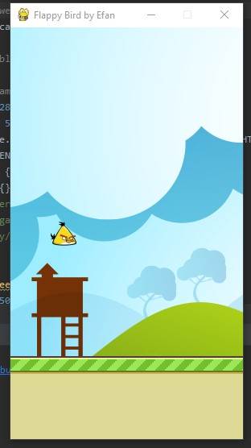

Flappy Bird Game
Flappy Bird is an arcade-style game in which the player controls the bird Faby, which moves persistently to the right. The player is tasked with navigating Faby through pairs of pipes that have equally sized gaps placed at random heights.
The player is tasked with navigating Faby through pairs of pipes that have equally sized gaps placed at random
heights.The most difficult element was getting the pipes in the right place.Some mathematical work was needed.
Technologies:
- - Python
- - PyGame